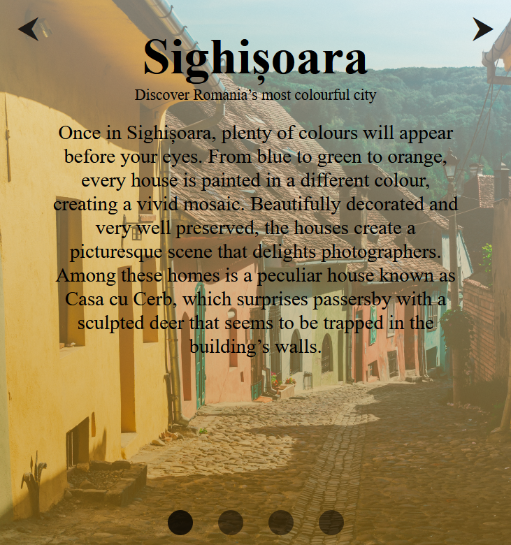

WDD 230 Lesson 5 Class Activity
This week you learned about Absolute and Relative positioning in css. You will be using these new skills to build a page that looks like this.
*Note you doesn't need functionality only style*
Think of these things as you look at the images
- What are things that are similar between the two views what things are different?
- What units should I use? (pixels/px don't fix everything)
- Mobile or desktop view first?
Desktop View

Mobile View
Other instructions
- You are provided the html file and the image used.
- Use css to style your page.
- Use a media query at 800px.
- Have fun!